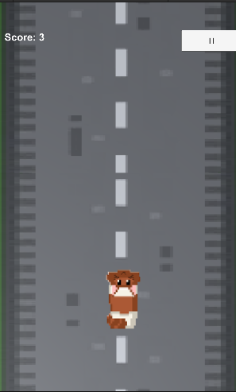

CatRacing
Kauã Rosales Pereira e Gabriela Rocha
Ano da criação: 2022
Gênero: Jogo de corrida interminável
Tecnologias ou técnicas utilizadas: Unity e C#
História: CatRacing é um jogo em que você controla um gatinho e o seu objetivo é tentar sobreviver o máximo de tempo possível, sem que colida com com um dos ossos de peixes. O jogo funciona a partir do acelerômetro em tablets e celulares, além de ter a ferramenta de pontuação.
Disponibilização para: download